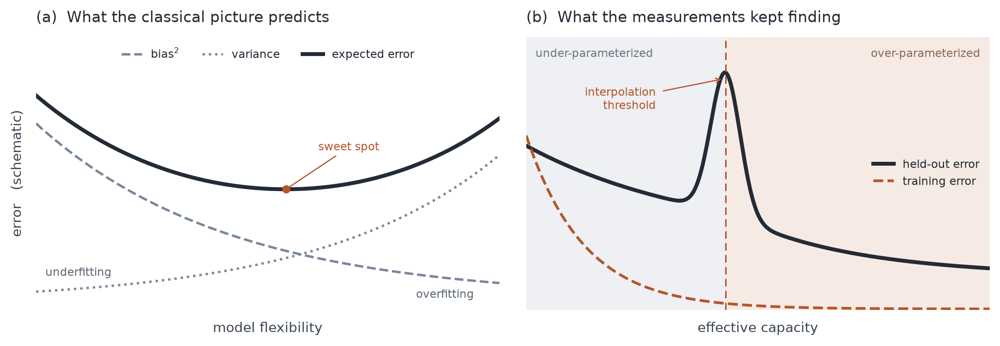
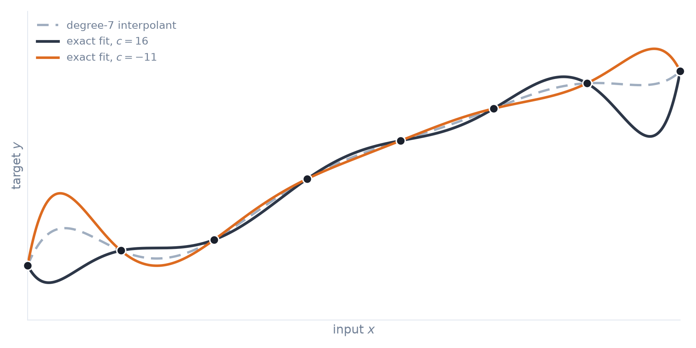
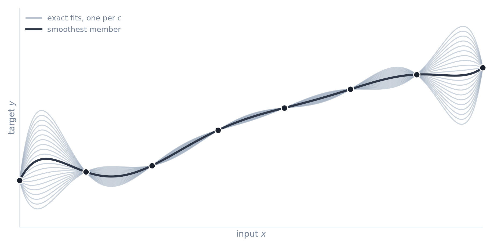
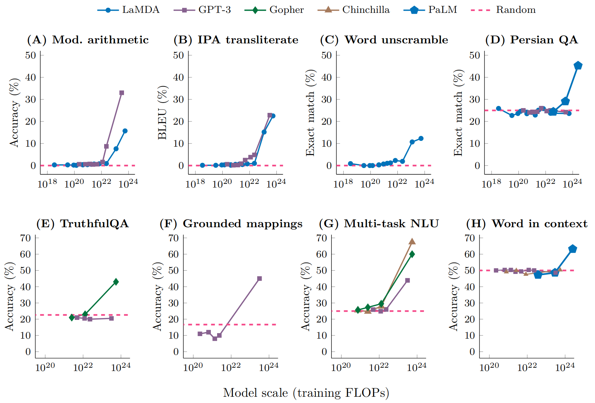
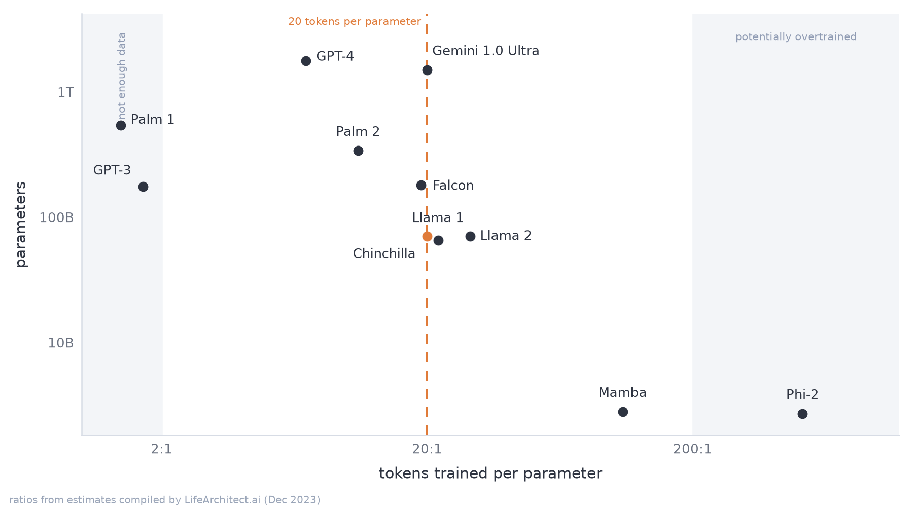

Every machine learning textbook draws the same U-shaped curve for generalization error. Add parameters, and held-out error falls to a sweet spot before fitting noise pushes it back up, with the bias-variance tradeoff setting where the turn happens and a validation set finding it. Deep networks break that picture. With orders of magnitude more parameters than data points, they fit noisy training samples to zero error and still predict unseen data well. Their held-out error can even fall a second time after rising near perfect fitting, a pattern called double descent [1]. Parameter count, the classical proxy for capacity, turns out to be a poor guide to what these systems actually do.
The puzzle sharpens in modern language models, where held-out error stops acting like one static number fixed when training ends. Cross-entropy loss on unseen text can drop smoothly across scale, yet prompted benchmark scores swing sharply across those same models. Extra compute spent at runtime can shift answers further without changing a single weight. What follows traces that progression through deep networks and the Transformer [2], from the breakdown of the textbook U-curve to the allocation of training and inference compute.
1. AlexNet and the limit of the U-curve
A Welch Labs video on double descent [3] sent me back to AlexNet’s 2012 ImageNet result. The network had about 60 million parameters and learned from roughly 1.2 million labeled images [4], a ratio that by the classical account left plenty of freedom to memorize its training set. AlexNet won the challenge anyway. One model cannot trace a curve, so the result proves nothing on its own, yet it gave the textbook expectation a counterexample to explain.
Generalization error—the error a model makes on unseen samples rather than the ones it trained on—is governed by the bias-variance tradeoff. Bias is the error of a model too simple to represent the pattern, while variance comes from sensitivity to the particular training sample and its noise. Added parameters lower bias until rising variance overtakes those gains and bends held-out error into the familiar U. AlexNet looked like a violation of that rule. The first explanation on offer credited explicit regularization: dropout, weight decay, and data augmentation were holding variance down where 60 million parameters would otherwise memorize everything [4].
In 2017, a direct experiment broke that story. Train standard convolutional networks on images with random noise in place of the labels. They still reach zero training error [5]. A model that can fit random labels has enough capacity to memorize its training set with or without explicit regularizers. Putting the true labels back while removing the standard regularizers still produced networks that generalized to held-out images, although explicit regularization remained a useful tuning knob [5]. The result changed how to interpret generalization: a network’s ability to memorize a sample does not tell us how it will predict on unseen data.
Measuring variance directly overturned the rest of the classical expectation. Across fully connected networks of growing width, total prediction variance fell as the networks widened past exact fitting, the opposite of what textbook variance curves predict [6]. The schematic below shows that trend across network widths.

Schematic of Neal et al.’s width experiments [6]: total prediction variance falls as networks widen past the vertical line marking the interpolation threshold. The curves show trends, not measured values.
Sweeping model size lengthens the picture, because held-out error can fall again once a model fits its training set completely [1]. Change the variable from size to training time and related curves appear. Later studies mapped double descent as a joint property of capacity and optimization steps [7, 8]. The classical U-curve is only the left-hand side of that longer trajectory up to the interpolation threshold, where capacity is just enough to force training error to zero.
At that threshold the fit is brittle. Every degree of freedom is pinned to the training points with little redundancy left to average away noise, so small changes in the sample move predictions sharply and held-out error spikes. Beyond that threshold a whole family of zero-error fits opens up, and the optimizer favors smoother, lower-norm members among them. That preference can lower held-out error a second time along the trajectory called double descent: a first descent, a peak at interpolation, and a second descent [1, 8]. The two panels below set the classical curve beside that trajectory.

The classical picture (left) and a possible double-descent trajectory (right). Left: expected error against model flexibility, with bias and variance. Right: training error (dashed) reaches zero at the interpolation threshold while held-out error (solid) can spike and then fall again. Both panels are schematics, not AlexNet measurements, after Belkin et al. [1] and Nakkiran et al. [8].
The peak is not universal. Cleaner labels often flatten it into a plateau near interpolation [8], and the curve’s shape depends on the data and the training budget as well as the model family. A single model, AlexNet included, cannot establish where on that trajectory a run sits.
To look for double descent, train a range of sizes on the same data, plot training and held-out error together with the point where training error first reaches zero marked, and see whether held-out error rises and then falls again. If training time is the variable instead of size, the comparison changes and the axis should say so.
Original figures: The images above are schematics, not reproductions. For measured results, see Zhang et al. (PDF), Neal et al. (PDF), Belkin et al. (paper), and Nakkiran et al. (PDF).
2. Why zero-error fits generalize
The interpolation threshold is easiest to see with a polynomial. Suppose we observe eight distinct input values \(x_i\) and their targets \(y_i\). A polynomial of degree at most seven threads all eight points uniquely. Allow one more degree and nothing pins the fit down anymore, because there are more coefficients than observations. If \(p_7(x)\) fits the eight points, so does
\[p_c(x)=p_7(x)+c\prod_{i=1}^{8}(x-x_i),\]
for any value of \(c\). Because the added product vanishes at every observed input, each member of the family achieves zero training error while remaining free to disagree between the points, as three fits from the family show below.

The eight observed points admit more than one exact fit. The dashed curve is the unique degree-7 interpolant, while the two solid curves add the term \(c\prod_{i=1}^{8}(x-x_i)\) for different values of \(c\). All three pass through every point and disagree between them. A constructed example, not measured data.
An exact training fit therefore does not identify a prediction at a new input. Because every value of the constant gives the same zero training loss, the training data cannot choose among these curves on their own. Sweeping the constant across the full family below highlights the smoothest member against its wigglier neighbors.

The full family of exact fits for the same eight points, with one curve per value of \(c\) passing through every observed point. The highlighted member is the smoothest curve of the kind that training preferences favor, while its neighbors trade smoothness for brittle wiggles. A constructed example, not measured data.
The choice among exact fits belongs to the training procedure, which favors smooth, low-norm curves over oscillatory ones. Change the initialization, the regularization, or the parameterization, and a different member wins. A deep network offers no closed-form \(p_c\) to inspect, yet its optimization dynamics make a comparable choice inside a much messier space of zero-error weights.
Even with every explicit penalty switched off, gradient descent started near zero drifts toward solutions of small magnitude rather than wandering blindly through zero-error fits, an effect known as implicit regularization. For linear classifiers on separable data, the iterates provably converge in direction to the maximum-margin separator [9].
Followed across training time on small algorithmic tasks, delayed structure formation shows up as grokking. Training accuracy nears perfection early while validation accuracy stays near chance for tens of thousands of steps before climbing sharply [10]. Studies of toy models and small transformers tie that late shift to structured low-dimensional representations replacing unstructured memorization once weight decay constrains capacity [11]. The late drop in validation loss recalls the epoch-wise double descent described by Nakkiran et al. [8], though Power et al. note that grokking arrives far past initial interpolation and without an early U-shaped validation curve [10].
The error spike right at exact fitting comes from matrix conditioning rather than slow representation drift. When a linear fit has just enough parameters to match every data point, solving for the weights inverts a design matrix that is nearly singular, whose smallest singular values collapse toward zero along the directions in which the observed inputs vary least. Because exact fitting divides by those tiny singular values, even slight label noise gets amplified into large weight swings that destabilize predictions whenever a test input has weight along those poorly sampled directions [12]. Moving well past the threshold turns that geometry favorable: the extra dimensions added by overparameterization spread the minimum-norm solution out and lift the smallest nonzero singular values off zero, damping noise amplification so predictions stabilize. That argument is exact for linear least squares and an analogy for deep networks, and it explains why fragility concentrates right at the onset of interpolation.
Some noise still gets memorized, and the theory of benign overfitting asks why that stored noise stays harmless [13]. In high-dimensional linear regression, capacity splits in two: a few dominant directions carry the signal while a long tail of low-variance directions absorbs the noise. Because fresh inputs barely excite that low-variance tail, the memorized noise has little effect on new predictions. Of the explanations in this section, benign overfitting makes the weakest case for a direct carry-over to deep networks: its signal-and-noise account is established in a linear setting.
3. Smooth loss, bumpy benchmarks
Language models are neural sequence predictors fitted on raw text [14]. Even so, a model’s average next-token loss can improve while its answers to one particular request get worse. Separating the two measurements requires notation for the request itself. Let \(X\) be the context, \(T\) the task stated in the prompt, and \(Y\) the answer being evaluated. When \(Y\) is a numeric score, task outcomes follow \(\mathbb{E}[Y \mid X,T]\), whereas generated text is modeled through probabilities over candidate responses.
A single pre-trained model can be directed toward many tasks through text alone with no weight update. Instructions can specify the task directly in zero-shot prompting [15], or examples placed in the input can define it through in-context learning [16]. The task changes with the prompt while the weights stay fixed.
Across model families of growing scale, task benchmarks behave less smoothly than pre-training loss. A capability is called emergent when measured performance sits near chance in smaller models and rises sharply in larger ones [17]. Those jumps appear on specific prompted benchmarks, and no single threshold governs every skill. Lower average prediction loss still does not tell how well a model will handle a particular request, as the benchmark curves below show.

Eight prompted-task benchmarks across model families, where several scores rise after a low-scoring range. Figure from Schaeffer, Miranda and Koyejo, reproducing results from Wei et al. [17] (also shown on ResearchGate). The horizontal axis is training FLOPs, and the scores describe behavior while leaving the mechanism open.
Some requests trace a less orderly curve. On eleven datasets from the Inverse Scaling Prize, task performance decreases as model scale grows, a pattern called inverse scaling [18]. Prompts that embed a misleading distractor task or demonstrations that cue the wrong continuation can pull larger models further off target, exposing failures that remain local to the task and its evaluation while aggregate loss declines.
Testing those eleven datasets on still larger models changes the picture again. Six of the eleven tasks recover along U-shaped curves that fall and then climb, while four keep degrading with scale and one improves throughout [19]. Expressed as error, the recovering tasks rise and then fall across scale in a curve that resembles the recovery phase of double descent visually, though without an established interpolation threshold or shared mechanism. Wei and colleagues hypothesize that medium-sized models pick up an embedded distractor task that larger models learn to ignore, while noting that this mechanism goes untested and that several recovering tasks remain near chance unless demonstrations or reasoning prompts are added [19].
Even a sharp benchmark jump needs care. A discontinuous score such as exact match gives zero credit until the whole output is right, which can turn smooth growth in token probabilities \(P(y_t\mid y_{<t},X,T)\) across a multi-step answer into an abrupt step on the curve [20]. The jump can still reflect real new behavior. The plot alone cannot tell whether the underlying change was sudden or gradual. To assess on-the-fly adaptation, we also have to check how predictions behave when the task and examples in the prompt change.
Average loss on held-out text declines smoothly while those task scores stay volatile. Part of the difference is the training regime. Classical benchmarks cycle over a finite dataset until the model fits it to zero error, producing the interpolation peak of Section 1, whereas frontier language models train in a streaming regime over trillions of tokens and rarely read the same sequence twice. With no fixed sample fit again and again, no finite-data interpolation threshold forms and aggregate loss follows a smooth trend; repetition and local overfitting still occur, though within the measured range the loss stays predictable.
Training Compute-Optimal Large Language Models gives that trend a fitted form for transformer language models [21]. Commonly called the Chinchilla scaling law, the relation predicts the expected loss of a planned run before training begins:
\[L(N,D)=E+\frac{A}{N^{\alpha}}+\frac{B}{D^{\beta}}.\]
Here \(N\) counts total model parameters, \(D\) counts training tokens, and \(L\) is the expected cross-entropy loss [21]. The fitted floor \(E\) summarizes what remains under this parametric model of the data and should not be read as a universal constant for natural language. Parameter and data terms decay as power laws with exponents of about \(\alpha=0.34\) and \(\beta=0.28\). The relation is an empirical fit and holds within the range that was studied.
Under the approximate training-compute relation \(C\approx6ND\), the fit favors growing tokens and parameters together when training loss under a fixed training budget is the objective. The Chinchilla experiments put that balance near 20 training tokens per parameter in their setting [21]. That ratio prices training compute alone and leaves out the cost of serving the model repeatedly afterward, as the comparison below illustrates.

Token-to-parameter ratios for selected models, drawn from the estimates compiled by Alan D. Thompson, LifeArchitect.ai (December 2023). This is an annotated comparison, not Hoffmann et al.’s fitted loss surface: some model values are estimates, and moving to the right does not by itself imply a poor deployment choice.
So a compact model can be trained on far more data than the training-compute optimum suggests. Llama 3 8B was trained on more than 15 trillion tokens [22], roughly 90 times the 20-token-per-parameter reference. The trade is deliberate. Extra compute before deployment yields a smaller model to serve afterward. Over-training can improve a compact model’s performance, though whether it crossed a particular emergent threshold must still be checked on the prompted task.
Between pre-training and serving sits post-training. Supervised instruction tuning and preference feedback turn a base model into an assistant [23] or specialize it to a domain. Pre-trained language models have low intrinsic dimension on downstream tasks, so fine-tuning can succeed inside a small subspace rather than adjusting every weight independently [24]. Low-rank adaptation (LoRA) exploits low-rank structure in weight updates by freezing the pre-trained matrices and training small rank-decomposition factors in the attention projections, demonstrated at GPT-3 175B scale [25]. By analogy to the low-dimensional representations seen in grokking, adaptation acts inside a compact subspace, though here the evidence comes from pre-trained subspace geometry rather than delayed algorithmic training.
A second trade happens at inference time with the weights held fixed. A single generation draws one sample from the next-token distribution and pass@1 scores that attempt [26], whereas extra inference compute generates N candidate answers and selects among them. Where the task admits an automatic check such as unit tests or an exact answer, a trained verifier can rank the candidates in best-of-N selection [27]. For reasoning problems, eliciting intermediate steps via chain-of-thought prompting [28] and returning the majority answer across sampled chains needs no learned verifier at all, an approach called self-consistency [29]. The weights stay fixed in every scheme while sample count and selection rule vary.
Selection can also work below the level of the full answer. A process reward model scoring each intermediate step can prune failing branches and continue along stronger ones, turning one pass into a search over reasoning paths. The trade is explicit. Extra tokens and latency buy deeper search, and the returns concentrate on verifiable tasks, since without a reliable check more samples reproduce the same errors at higher cost.
At fixed weights, a larger inference budget changes the distribution over answers and reduces variance across attempts on verifiable tasks. Under a latency and cost constraint, correctness becomes partly purchasable. In the studied setting, allocating that budget well let a smaller model surpass one fourteen times larger at matched compute on problems the base model already solves some of the time [30].
The behavior being scaled at runtime can itself be trained. DeepSeek-R1 was optimized against verifiable rewards, and the resulting policy produces longer, self-checking reasoning traces during generation [31]. The pre-training law and the inference budget measure different quantities: the law forecasts the loss of the model being trained, while accuracy on a prompted task depends on how that model is queried and checked.
4. Where to spend compute
Classical statistical learning treated capacity as a hazard. It taught practitioners to add only enough parameters to capture the signal while regularizing hard and stopping when validation error first turned upward. From AlexNet through the Chinchilla fit, overparameterized models show where that posture breaks down, because extra dimensions give gradient descent room to settle onto smooth, low-norm solutions instead of brittle threshold fits. A prompt can then specify a new task without touching those weights at all through the conditional target \(\mathbb{E}[Y \mid X,T]\) of Section 3.
For practitioners, held-out error is no longer a static number fixed in the weights when training ends. It becomes dynamic at three levels: across pre-training runs, single-pass streaming and inference-optimal over-training follow smooth power laws that trade upfront compute against serving cost. Across tasks, accuracy can fall before recovering with scale and jump sharply under strict scoring rules. At runtime, search and verification turn test-time compute into an active dial for cutting error when checking supports it.
Monitoring habits shift alongside that behavior. Tracking continuous token loss beside exact-match scores during training and adaptation keeps steady probability gains from looking like stagnation. When a validation curve stalls on a structured problem, continuing to measure can catch late drops that early stopping would miss. For prediction under a defined sampling process, cross-validation, RMSE, and AUC remain the right instruments, whereas multi-step systems that call tools and change state have to be judged through outcomes and constraint checks.
The work now includes deciding where capability should live: compressed into the weights during pre-training, added through low-rank updates afterward, or searched and verified at the moment of inference. That budget question turns on what can actually be checked. Post-training rewards and test-time search reliably cut error where unit tests or explicit state constraints can reject bad candidates. Deep models can carry enough flexibility to take up a new task from a prompt without changing weights. On open-ended tasks without an automatic verifier, that on-the-fly adaptation still needs an external check: following the prompt does not establish that the answer describes the situation correctly.
References
- Belkin, M., Hsu, D., Ma, S. and Mandal, S. (2019). “Reconciling modern machine-learning practice and the bias–variance trade-off.” https://www.pnas.org/doi/10.1073/pnas.1903070116
- Vaswani, A. et al. (2017). “Attention Is All You Need.” https://arxiv.org/abs/1706.03762
- Welch Labs (2025). “What the Books Get Wrong about AI [Double Descent].” YouTube. https://www.youtube.com/watch?v=z64a7USuGX0
- Krizhevsky, A., Sutskever, I. and Hinton, G. E. (2012). “ImageNet Classification with Deep Convolutional Neural Networks.” https://papers.nips.cc/paper_files/paper/2012/hash/c399862d3b9d6b76c8436e924a68c45b-Abstract.html
- Zhang, C., Bengio, S., Hardt, M., Recht, B. and Vinyals, O. (2017). “Understanding deep learning requires rethinking generalization.” https://arxiv.org/abs/1611.03530
- Neal, B., Mittal, S., Baratin, A., Tantia, V., Scicluna, M., Lacoste-Julien, S. and Mitliagkas, I. (2019). “A Modern Take on the Bias-Variance Tradeoff in Neural Networks.” https://arxiv.org/abs/1810.08591
- Lafon, M. and Thomas, A. (2024). “Understanding the Double Descent Phenomenon in Deep Learning.” https://arxiv.org/abs/2403.10459
- Nakkiran, P. et al. (2020). “Deep Double Descent: Where Bigger Models and More Data Hurt.” https://arxiv.org/abs/1912.02292
- Soudry, D., Hoffer, E., Nacson, M. S., Gunasekar, S. and Srebro, N. (2018). “The Implicit Bias of Gradient Descent on Separable Data.” Journal of Machine Learning Research 19(70), 1–57. https://arxiv.org/abs/1710.10345
- Power, A. et al. (2022). “Grokking: Generalization Beyond Overfitting on Small Algorithmic Datasets.” https://arxiv.org/abs/2201.02177
- Liu, Z., Kitouni, O., Nolte, N., Michaud, E. J., Tegmark, M. and Williams, M. (2022). “Towards Understanding Grokking: An Effective Theory of Representation Learning.” Advances in Neural Information Processing Systems 35, 34651–34663. https://arxiv.org/abs/2205.10343
- Hastie, T., Montanari, A., Rosset, S. and Tibshirani, R. J. (2022). “Surprises in High-Dimensional Ridgeless Least Squares Interpolation.” The Annals of Statistics 50(2), 949–986. https://arxiv.org/abs/1903.08560
- Bartlett, P. L., Long, P. M., Lugosi, G. and Tsigler, A. (2020). “Benign Overfitting in Linear Regression.” Proceedings of the National Academy of Sciences 117(48), 30063–30070. https://arxiv.org/abs/1906.11300
- Bengio, Y., Ducharme, R., Vincent, P. and Jauvin, C. (2003). “A Neural Probabilistic Language Model.” https://www.jmlr.org/papers/v3/bengio03a.html
- Radford, A. et al. (2019). “Language Models are Unsupervised Multitask Learners.” https://cdn.openai.com/better-language-models/language_models_are_unsupervised_multitask_learners.pdf
- Brown, T. B. et al. (2020). “Language Models are Few-Shot Learners.” https://arxiv.org/abs/2005.14165
- Wei, J. et al. (2022). “Emergent Abilities of Large Language Models.” https://arxiv.org/abs/2206.07682
- McKenzie, I. R. et al. (2023). “Inverse Scaling: When Bigger Isn’t Better.” Transactions on Machine Learning Research. https://arxiv.org/abs/2306.09479
- Wei, J., Kim, N., Tay, Y. and Le, Q. V. (2023). “Inverse Scaling Can Become U-Shaped.” Transactions on Machine Learning Research. https://arxiv.org/abs/2211.02011
- Schaeffer, R., Miranda, B. and Koyejo, S. (2023). “Are Emergent Abilities of Large Language Models a Mirage?” https://arxiv.org/abs/2304.15004
- Hoffmann, J. et al. (2022). “Training Compute-Optimal Large Language Models.” Advances in Neural Information Processing Systems 35, 30016–30030. https://arxiv.org/abs/2203.15556
- Dubey, A. et al. (2024). “The Llama 3 Herd of Models.” arXiv. https://arxiv.org/abs/2407.21783
- Ouyang, L. et al. (2022). “Training language models to follow instructions with human feedback.” https://arxiv.org/abs/2203.02155
- Aghajanyan, A., Zettlemoyer, L. and Gupta, S. (2021). “Intrinsic Dimensionality Explains the Effectiveness of Language Model Fine-Tuning.” Proceedings of the 59th Annual Meeting of the Association for Computational Linguistics (ACL), 7319–7328. https://arxiv.org/abs/2012.13255
- Hu, E. J., Shen, Y., Wallis, P., Allen-Zhu, Z., Li, Y., Wang, S., Wang, L. and Chen, W. (2022). “LoRA: Low-Rank Adaptation of Large Language Models.” International Conference on Learning Representations (ICLR). https://arxiv.org/abs/2106.09685
- Chen, M. et al. (2021). “Evaluating Large Language Models Trained on Code.” arXiv. https://arxiv.org/abs/2107.03374
- Cobbe, K. et al. (2021). “Training Verifiers to Solve Math Word Problems.” arXiv. https://arxiv.org/abs/2110.14168
- Wei, J. et al. (2022). “Chain-of-Thought Prompting Elicits Reasoning in Large Language Models.” https://arxiv.org/abs/2201.11903
- Wang, X. et al. (2023). “Self-Consistency Improves Chain of Thought Reasoning in Language Models.” International Conference on Learning Representations (ICLR). https://arxiv.org/abs/2203.11171
- Snell, C., Lee, J., Xu, K. and Kumar, A. (2024). “Scaling LLM Test-Time Compute Optimally can be More Effective than Scaling Model Parameters.” arXiv. https://arxiv.org/abs/2408.03314
- DeepSeek-AI (2025). “DeepSeek-R1 incentivizes reasoning in LLMs through reinforcement learning.” https://www.nature.com/articles/s41586-025-09422-z